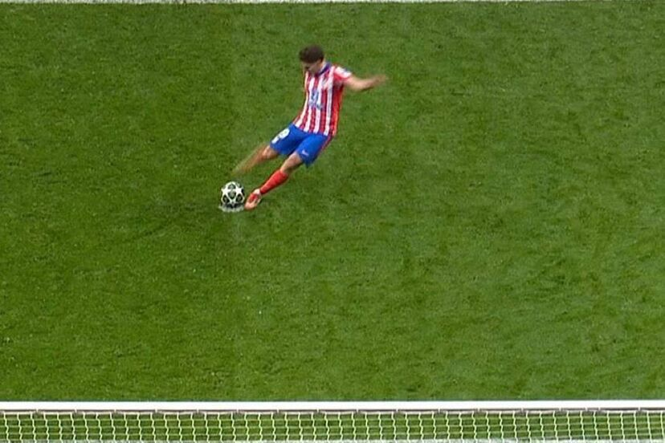

Escandalo de penaltis en Octavos de Final de la Champions League
En una noche llena de emoción, el partido de vuelta de los octavos de final de la Liga de Campeones entre el Atlético de Madrid y el Real Madrid dejó un momento polémico que sigue dando de qué hablar. En la tanda de penaltis, el delantero rojiblanco Julián Álvarez se presentó para ejecutar su disparo, pero lo que parecía un gol para la esperanza del Atlético rápidamente se transformó en una jugada controvertida.
Álvarez, al intentar ejecutar su penalti, resbaló y tocó el balón con ambos pies, lo cual, según las reglas del fútbol, está prohibido. Aunque inicialmente el gol fue validado, el árbitro decidió revisar la jugada con el VAR y, tras observar que hubo un "doble toque" en el balón, anuló el tanto, dejando a los fanáticos del Atlético desbordados de indignación.
Este fallo no solo afectó el ánimo de los jugadores y seguidores, sino que fue el punto clave que inclinó la balanza a favor del Real Madrid, que avanzó a los cuartos de final tras ganar la tanda de penaltis por 4-2. La decisión del VAR y la polémica sobre la ejecución de Álvarez desataron intensos debates entre los expertos y aficionados.
Diego Simeone, técnico del Atlético, no tardó en manifestarse: "Que levante la mano quien vio que Julián toca dos veces el balón", subrayando el malestar por la interpretación del árbitro.
Este incidente ha dejado a todos con una duda: ¿Fue justo que se anulase el penalti de Julián Álvarez o se trató de un error en la interpretación de las reglas? Lo único claro es que la polémica no ha hecho más que aumentar el sabor amargo para los colchoneros tras una noche llena de emociones.
Sin duda, este penalti será recordado como uno de los momentos más discutidos de la temporada.